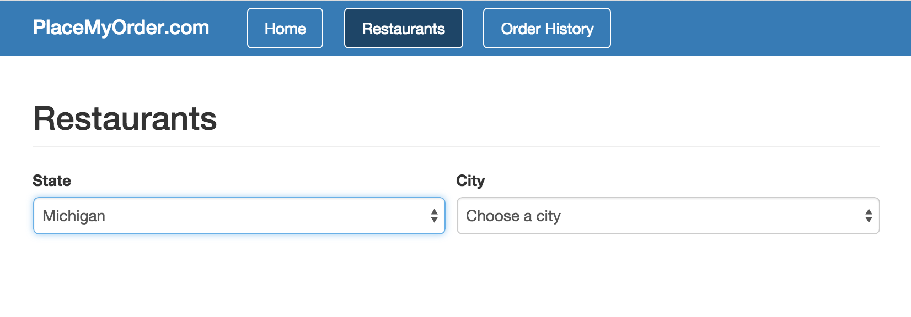
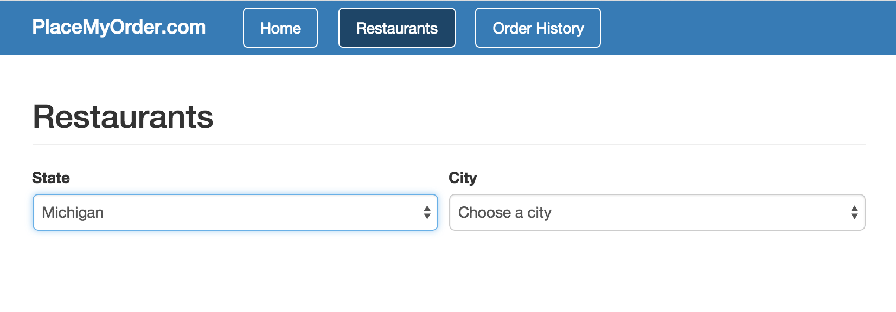

In the last chapter, we created the currentRestaurant component, and included it in our
template. Let’s add a little bit more advanced functionality: two select elements,
where selecting an option in the first one changes the options in the second.
Open your components/restaurant_list/restaurant_list.stache and edit it as follows:
<div class="restaurants">
<h2 class="page-header">Restaurants</h2>
<form class="form">
<div class="form-group">
<label>State</label>
<select {($value)}="state">
{{^if state}}
<option value="">Choose a state</option>
{{/if}}
{{#each states}}
<option value="{{name}}">{{name}}</option>
{{/each}}
</select>
</div>
<!-- The city select will go here -->
</form>
<!-- Restaurants code will go here -->
</div>
In the above code, you can see one select element for selecting a state. You can
see {{#each}} being used to create the list of options. You can also see that
if no state is selected, the “Choose a state” message is included as an option
until one has been selected.
Let’s modify our components/restaurant_list/restaurant_list.js file to include
what’s needed for our partial:
states with the list of states that can be selected.
In the state setter, we’re showing an alert when a new state is selected.
If you refresh the Restaurants page, you should see a select element with the
states as options; when you select a state, an alert will appear with the selected
state’s name.
Getting and Setting Scope Properties
It’s important to understand how to get and set the properties
of the view model. Getting and setting are done through the attr function off of
the viewModel object, in this case this is bound to the scope, because we’re
within a method of the scope. Let’s look at an example.
Open up components/restaurant_list/restaurant_list.js and replace this:
// City code will go here
with this:
cities: {
get: function() {
var state = this.attr('state');
return state && this.attr('citiesByState')[state];
}
},
citiesByState: {
get: function() {
var citiesByState = {};
this.attr('states').forEach(function(state) {
citiesByState[state.name] = state.cities;
});
return citiesByState;
}
},
city: {
value: null
}
This code creates three new properties:
city with the name of the city that’s selected,
citiesByState which is an object that has the list of cities by state name, and
cities which is the list of cities for the selected state.
Let’s update the stache file to take advantage of these new properties.
Open components/restaurant_list/restaurant_list.stache and find this line:
This new part of the template will show a select element with the cities
for the selected state as options. Note that when no city is selected,
the element will have a “Choose a city” option.
If you refresh the Restaurants page, you’ll see the new city select
element that has options as soon as you select a state. However, there’s
a bug: if you change the state, the first city for the new state is automatically
selected, even though the user hasn’t made a city choice. Let’s fix this
by nullifying the city when the state changes. Find the state setter:
set: function() {
// Remove the city when the state changes
this.attr('city', null);
}
Notice that we are nullifying the city property when the state changes.
If you refresh the Restaurants page in your browser, select a state,
select a city, then select another state, you’ll see the “Choose a city”
option in the city select element instead of the first city in that
state.

Separating the Component & View Model
It’s considered a best practice to keep your can.Components
thin. This helps maintain readability and maintainability. To accomplish this,
you extract your scope from the can.Component into a can.Map.
Open up components/restaurant_list/restaurant_list.js and replace the
contents of the file with this:
If you go back out to your application and refresh the page, it should all
look and work the same. What we’ve done, by separating out the view model,
is make the code easier to read and maintain.
In the next chapter, we’ll learn about working with more realistic data by
adding REST service interaction with can.Model.
In this Chapter
Get the code for: chapter: view models
In the last chapter, we created the
currentRestaurantcomponent, and included it in our template. Let’s add a little bit more advanced functionality: two select elements, where selecting an option in the first one changes the options in the second.Open your
components/restaurant_list/restaurant_list.stacheand edit it as follows:In the above code, you can see one select element for selecting a state. You can see
{{#each}}being used to create the list of options. You can also see that if no state is selected, the “Choose a state” message is included as an option until one has been selected.Let’s modify our
components/restaurant_list/restaurant_list.jsfile to include what’s needed for our partial:Here we’re using the define plugin to set up two new properties:
stateto keep track of the selected state, andstateswith the list of states that can be selected.In the
statesetter, we’re showing an alert when a new state is selected. If you refresh the Restaurants page, you should see a select element with the states as options; when you select a state, an alert will appear with the selected state’s name.Getting and Setting Scope Properties
It’s important to understand how to get and set the properties of the view model. Getting and setting are done through the
attrfunction off of theviewModelobject, in this casethisis bound to the scope, because we’re within a method of the scope. Let’s look at an example.Open up
components/restaurant_list/restaurant_list.jsand replace this:with this:
This code creates three new properties:
citywith the name of the city that’s selected,citiesByStatewhich is an object that has the list of cities by state name, andcitieswhich is the list of cities for the selected state.Let’s update the stache file to take advantage of these new properties. Open
components/restaurant_list/restaurant_list.stacheand find this line:and replace it with this:
This new part of the template will show a select element with the cities for the selected state as options. Note that when no city is selected, the element will have a “Choose a city” option.
If you refresh the Restaurants page, you’ll see the new city select element that has options as soon as you select a state. However, there’s a bug: if you change the state, the first city for the new state is automatically selected, even though the user hasn’t made a city choice. Let’s fix this by nullifying the city when the state changes. Find the state setter:
and replace it with this:
Notice that we are nullifying the city property when the state changes. If you refresh the Restaurants page in your browser, select a state, select a city, then select another state, you’ll see the “Choose a city” option in the city select element instead of the first city in that state.

Separating the Component & View Model
It’s considered a best practice to keep your
can.Componentsthin. This helps maintain readability and maintainability. To accomplish this, you extract your scope from thecan.Componentinto acan.Map.Open up
components/restaurant_list/restaurant_list.jsand replace the contents of the file with this:If you go back out to your application and refresh the page, it should all look and work the same. What we’ve done, by separating out the view model, is make the code easier to read and maintain.
In the next chapter, we’ll learn about working with more realistic data by adding REST service interaction with
can.Model.‹ Components Data Models and Fixtures ›